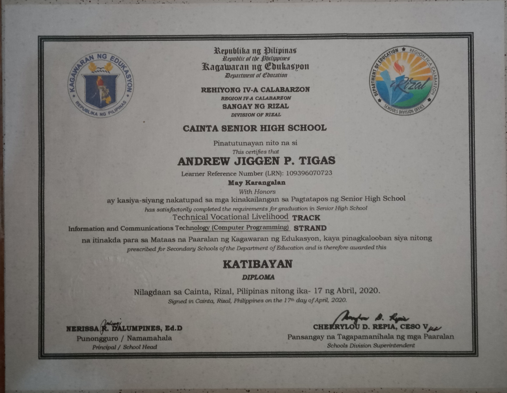
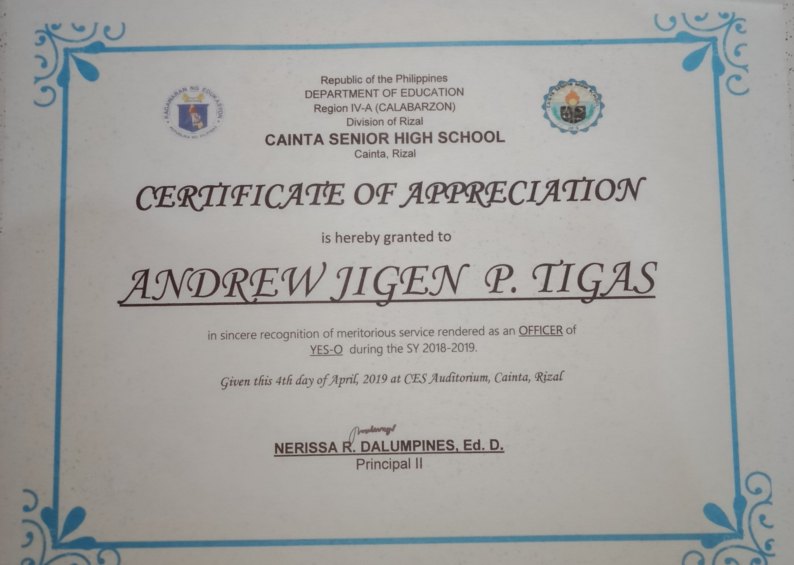

Name : Andrew Jiggen P. Tigas
Age : 19 years old
My family is composed of 3 female homo-sapiens, my grandmother, my mother and my younger sister, and 3 male homo-sapiens, my father, my youngest brother, and me. Both my parents are working their butt for our sake.
With all honesty, I am a master expert in intrapersonal communication. I talk to myself whatever the situation is, but ofcourse only I can hear what's going on. Not to mention I also like beatboxing.
I am somewhat confident with my skills in handling computer hardware rather than software. It is and will always be my joy when the LAN tester's light indicators were all turned on when I am creating a LAN cable for computer connection. Although I also love the thrill of programming, but I'm not that fond with it.
I am recognized by TESDA as competent in Computer System Servicing NC II. Although I still need a lot of practice to make full use of this ability I learned.
Achievement Unlocked : National Certificate II
Achievement Unlocked : G12 Outstanding Student
Achievement Unlocked :The school organization I am in was recognized by the school with me being the Vice-President of the said organization.
- Aozaki Touko